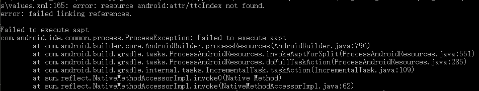
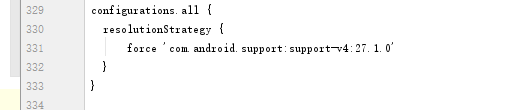

ionic3 android打包报错resource android:attr/ttcIndex not found以及Failed to execute aapt的解决方法。
1、AAPT是什么
AAPT - Android Asset Packaging Tool
AAPT是Android资源打包工具
2、问题出现
安装android@6.3.0时，能正常打出apk包，但是当我升级platform android到7.0.0时编译会报错，信息如下：

3、解决办法
platforms/android/app/build.gradle 和 platforms/android/build.gradle 文件中添加如下代码：
